Additional Images
Below are additional images related to our audio processing results. These images provide visual representations of various data and analysis.
(a) input_cn_male.wav waveform
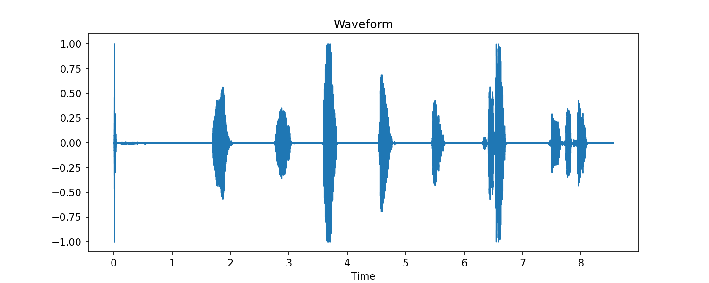
(b) input_cn_male.wav melspectrogram
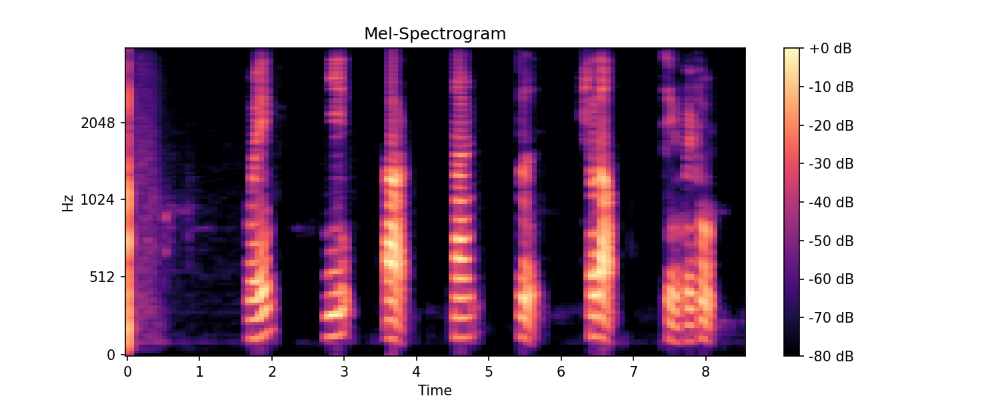
(c) output_cn_male_34.wav waveform

(d) output_cn_male_34.wav melspectrogram
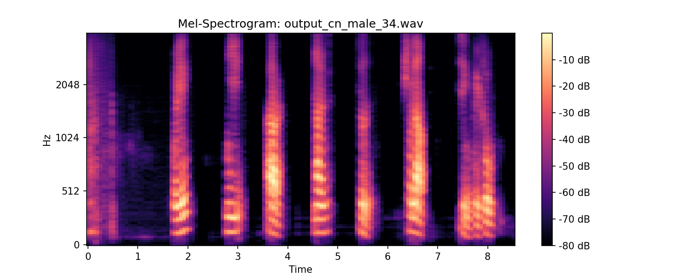
(e) output_cn_male_19v.wav waveform
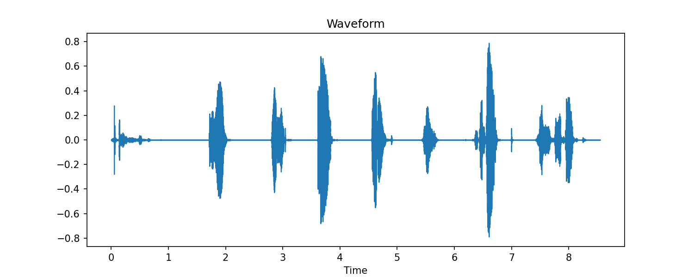
(f) output_cn_male_19v.wav melspectrogram
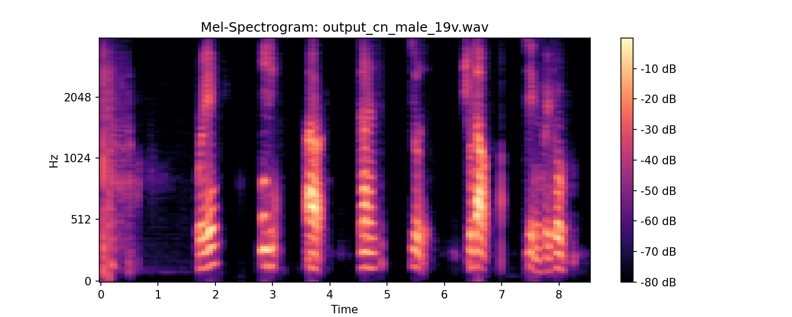
(g) output_cn_male_19.wav waveform

(h) output_cn_male_19.wav melspectrogram
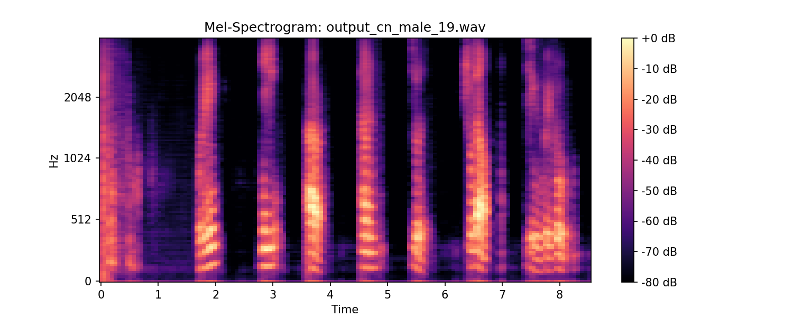
(i) output_cn_male_11.wav waveform
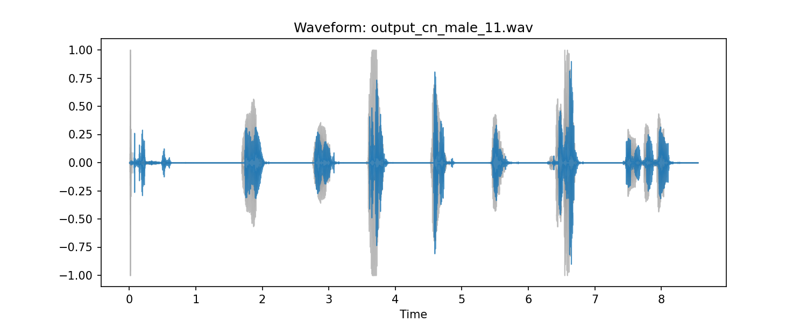
(j) output_cn_male_11.wav melspectrogram
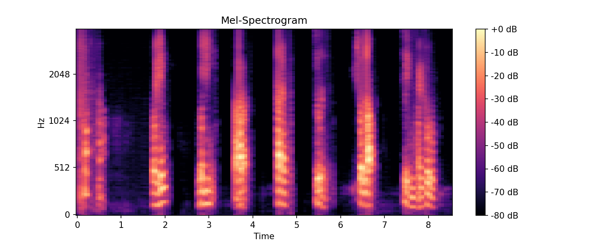
(k) output_codec_2400_cn_male.wav waveform
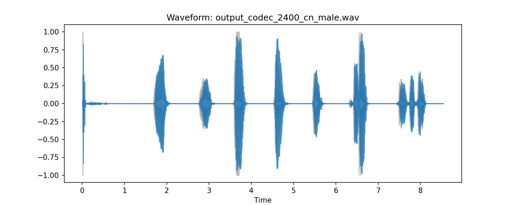
(l) output_codec_2400_cn_male.wav melspectrogram

(m) output_codec_700_cn_male.wav waveform
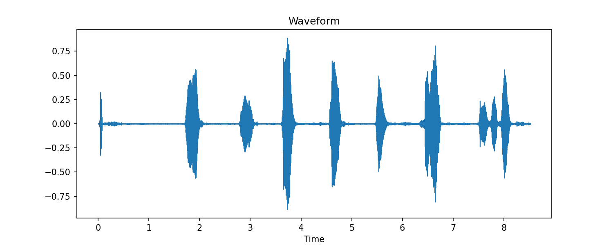
(n) output_codec_700_cn_male.wav melspectrogram">
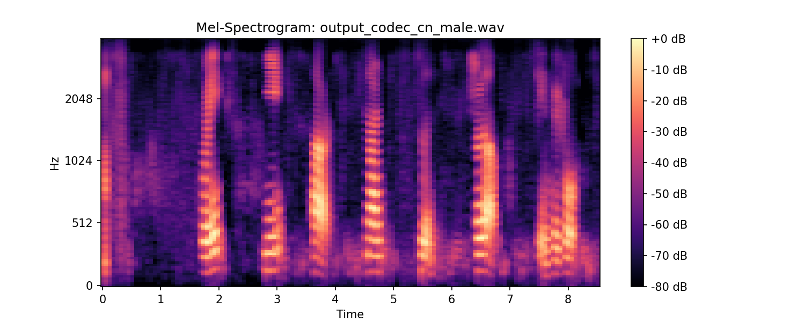